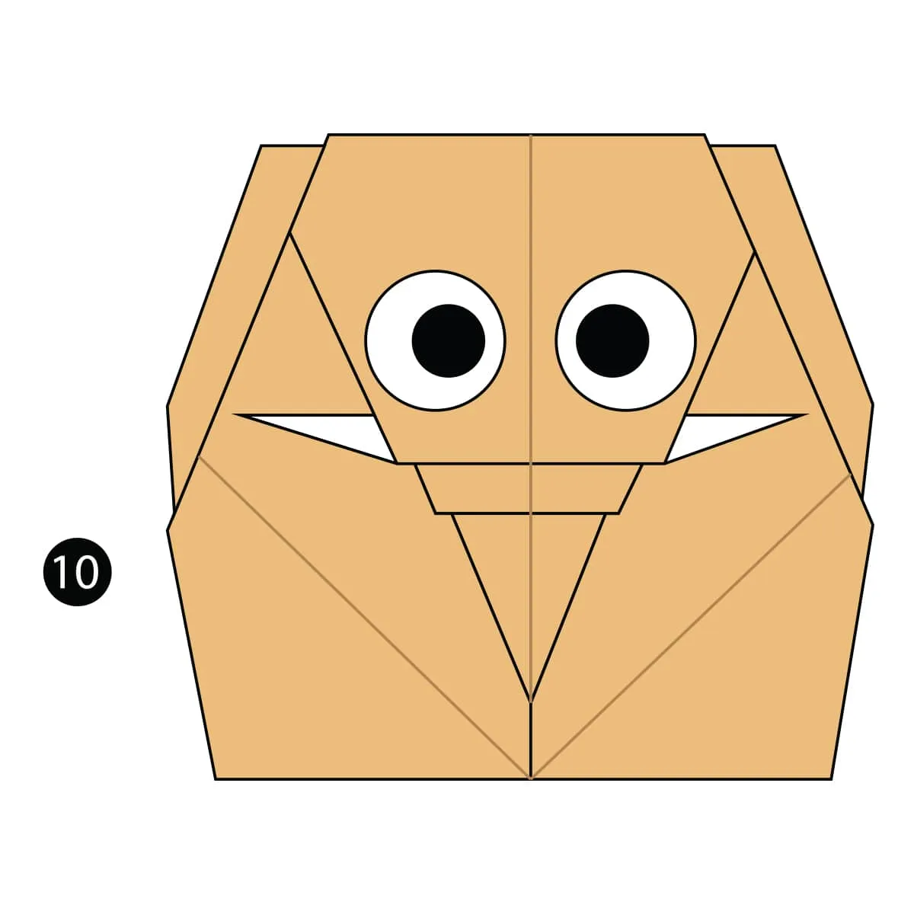

Diseños de Origami
Acerca de Nosotros
Síguenos

Datos interesantes de los elefantes
- Los elefantes son los animales más grandes de la tierra
- Una de sus actividades favoritas es la natación
- Cuentan con una excelente memoria
Aprende más sobre elefantes AQUÍ

Datos interesantes de los osos panda
- Los osos panda al nacer son totalmente blancos y ciegos
- Los osos panda en sus primeros meses de vida son sumamente juguetones y les encantan los retos
- A diferencia de las demás especies de osos, los osos panda NO hibernan
Aprende más sobre osos panda AQUÍ